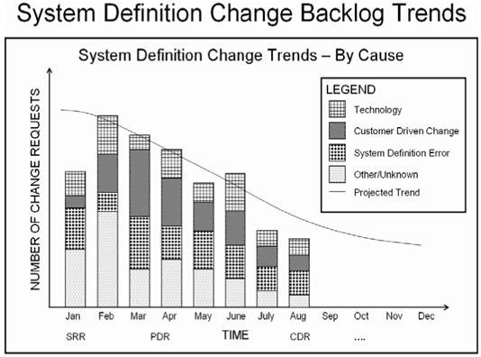
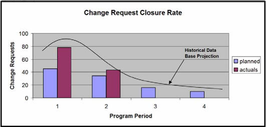

| Example: SE Leading Indicators - System Definition Change Backlog Trends (PSM SE) |
 |
|
This indicator is used to evaluate the trends in system definition change backlog, indicating whether the change backlog is impeding system definition progress or system development quality/schedule. It may also provide an indication of potential rework due to changes not being available in a timely manner. An example of how such an indicator might be reported is show below. Refer to the measurement specification in Example: Measurement Specification: System Definition Change Backlog Trends (PSM SE) for the details regarding this indicator; the specification includes the general information which would be tailored by each organization to suit its needs and organizational practices. 
System Definition Change Backlog Trends. The graphs included here illustrate the system definition change trend in respect to the historically based expected trend of changes. In the case of the System Definition Change Trend – By Cause example, we see at SRR there are actually less changes than expected, and the program might need to investigate the factors for this to determine if this is a concern, and perhaps may lead to higher levels of change later in the program. The number of Change Requests in the month following the SRR, could project to a very challenging trend, but generally falls within historical experience. Fortunately, the trend observed between the SRR and the PDR tracks remains in line with historical experience, perhaps suggesting that no significant issues exist with respect to the total number of changes. The organization may find it useful investigate the individual trends associated with the changes categorized according to cause. A very mature organization might have expected trend lines for each type of change. In the case of the System Change Density Trend example, we see that this indicator is used to evaluate the changes categorized according to priority over time in terms of cost and schedule impact. It indicates whether the program is effectively managing the program changes as shown by predicted impact ratings over time. If the impacts continue to grow or not be reduced, the customer satisfaction may be negatively impacted due to resulting cost, schedule, or technical impacts. In addition to the change data itself, the average time to resolve the change requests provides additional leading information, as shown in the example graphs below.

The System Definition Change Resolution Time graph illustrates the average time to resolve change requests versus what is planned for the program or historical data. Based on historical data and nature of the program, a projection is made for the future; In this case, the actual data depicted through Program Period 2 warrants further analysis as it is significantly over the expectations (it is neither to program plan or historical-based projects) and may not be trending appropriately over time. Mature organizations should be able to identify lower and upper thresholds, as well as average time (organization’s mean capability), to resolve a change. The Change Request Closure Rate graphs illustrates the number of change requests resolved versus what is planned for the program based on historical data and nature of the program. Based on actual data to date, a projection is made for the future. The graph used for the Requirement TBD/TBR Discovery Rate in Example: SE Leading Indicators - Requirements Trend (PSM SE) can also be applied to plot the Request for Changes (RFCs) to indicate the trend for system definition and design stability.
Refer to Example: Measurement Specification: System Definition Change Backlog Trends (PSM SE) for a detailed understanding of this leading indicator.
|


| Copyright © 2007 by LAI, INCOSE, PSM, and LEARI (Systems Leading Indicators Guide Copyright) |